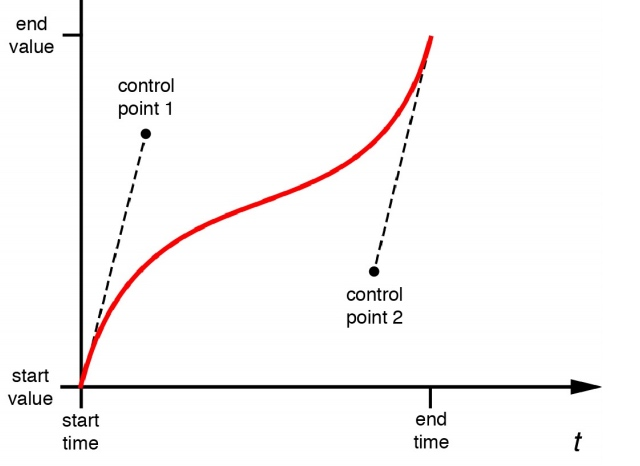
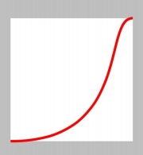
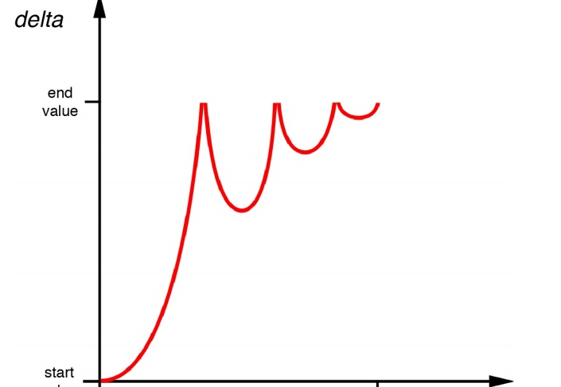

Core Animation使用缓冲来使动画移动更平滑更自然。我们来试着研究如何对你的动画控制和自定义缓冲曲线。
动画速度
velocity = change / time（假设速度不变也就是“线性步调”）
其实速度在动画整个移动过程中并不一定是恒定不变的,是有加速度的,为了实现这种加速度,一种方法是使用物理引擎来对运动物体的摩擦和动量来建模，然而这会使得计算过于复杂。我们称这种类型的方程为缓冲函数，幸运的是，Core Animation内嵌了一系列标准函数提供给我们使用。
CAMediaTimingFunction
显式动画CAAnimation的timingFunction属性就是CAMediaTimingFunction类对象
隐式动画用CATransaction的+setAnimationTimingFunction:方法，来调整动画时间函数
CAMediaTimingFunction用+timingFunctionWithName:方法构造对象：
//几种常量
kCAMediaTimingFunctionLinear//。默认。线性计时函数
kCAMediaTimingFunctionEaseIn//慢慢加速然后突然停止
kCAMediaTimingFunctionEaseOut//全速开始 慢慢减速停止
kCAMediaTimingFunctionEaseInEaseOut//慢慢加速然后再慢慢减速
kCAMediaTimingFunctionDefault//类似淡入淡出但是加速和减速过程更慢
/**
UIView 的动画方法默认kCAMediaTimingFunctionEaseInEaseOut
CAAinamtion 默认kCAMediaTimingFunctionLinear
*/
[CATransaction begin];
[CATransaction setAnimationDuration:1.0];
[CATransaction setAnimationTimingFunction:[CAMediaTimingFunction functionWithName:kCAMediaTimingFunctionEaseOut]];
//set the position
self.colorLayer.position = [[touches anyObject] locationInView:self.view];
//commit transaction
[CATransaction commit];
UIView 的动画缓冲
UIView 动画的缓冲选项，options参数
UIViewAnimationOptionCurveEaseInOut//默认
UIViewAnimationOptionCurveEaseIn
UIViewAnimationOptionCurveEaseOut
UIViewAnimationOptionCurveLinear
- (void)touchesBegan:(NSSet *)touches withEvent:(UIEvent *)event
{
//perform the animation
[UIView animateWithDuration:1.0 delay:0.0 options:UIViewAnimationOptionCurveEaseOut
animations:^{
//set the position
self.colorView.center = [[touches anyObject] locationInView:self.view];
}
completion:NULL];
}
缓冲和关键帧动画
对于关键帧动画：我们不想给整个动画过程应用这个效果，我们希望对每个动画的过程重复这样的缓冲.
CAKeyframeAnimation 有一个 NSArray 类型的timingFunctions属性，我们
可以用它来对每次动画的步骤指定不同的计时函数。这个数组个数需要与关键帧(keyframes)个数减一,它是每两个关键帧之间的效果.
//create a keyframe animation
CAKeyframeAnimation *animation = [CAKeyframeAnimation animation];
animation.keyPath = @"backgroundColor";
animation.duration = 2.0;
animation.values = @[
(__bridge id)[UIColor blueColor].CGColor,
(__bridge id)[UIColor redColor].CGColor,
(__bridge id)[UIColor greenColor].CGColor,
(__bridge id)[UIColor blueColor].CGColor ];
//add timing function
CAMediaTimingFunction *fn = [CAMediaTimingFunction functionWithName: kCAMediaTimingFunctionEaseIn];
animation.timingFunctions = @[fn, fn, fn];
//apply animation to layer
[self.colorLayer addAnimation:animation forKey:nil];
自定义缓冲函数
除了+functionWithName:之外,CAMediaTimingFunction还有另一个构造函数+functionWithControlPoints::::（四个浮点参数）可以创建一个自定义的缓冲函数.
三次贝塞尔曲线
曲线的斜率代表了速度，斜率的改变代表了加速度,
CAMediaTimingFunction使用了一个叫做三次贝塞尔曲线的函数，它只可以产出指定缓冲函数的子集,用四个点来定义，第一个和最后一个点代表了曲线的起点和终点,剩下中间两个点控制了曲线的形状（曲线并不一定要穿过这两个点）.

CAMediaTimingFunction有- getControlPointAtIndex:values:的方法(Index为0.1.2.3 分别代表着四个点)，可以用来检索曲线的点.使用它我们可以找到标准缓冲函数的点，然后用UIBezierPath和CAShapeLayer 来把它画出来。
曲线的起始和终点始终是{0, 0}和{1, 1}
//可以通过改变常量来看各个函数
CAMediaTimingFunction *function = [CAMediaTimingFunction functionWithName: kCAMediaTimingFunctionEaseOut];
//get control points
CGPoint controlPoint1, controlPoint2;
[function getControlPointAtIndex:1 values:(float *)&controlPoint1];
[function getControlPointAtIndex:2 values:(float *)&controlPoint2];
//create curve
UIBezierPath *path = [[UIBezierPath alloc] init];
[path moveToPoint:CGPointZero];
[path addCurveToPoint:CGPointMake(1, 1)
controlPoint1:controlPoint1 controlPoint2:controlPoint2];
//scale the path up to a reasonable size for display
[path applyTransform:CGAffineTransformMakeScale(200, 200)];
//create shape layer
CAShapeLayer *shapeLayer = [CAShapeLayer layer];
shapeLayer.strokeColor = [UIColor redColor].CGColor;
shapeLayer.fillColor = [UIColor clearColor].CGColor;
shapeLayer.lineWidth = 4.0f;
shapeLayer.path = path.CGPath;
[self.layerView.layer addSublayer:shapeLayer];
//flip geometry so that 0,0 is in the bottom-left
self.layerView.layer.geometryFlipped = YES;
//要初始微弱，然后迅速上升，最后缓冲到终点
[CAMediaTimingFunction functionWithControlPoints:1 :0 :0.75 :1];

更加复杂的动画曲线

实现这个效果方法:
- 用 CAKeyframeAnimation 创建一个动画，然后分割成几个步骤，每个小步骤使用自己的计时函数。
- 使用定时器逐帧更新实现动画
基于关键帧的缓冲
我们用关键帧缓冲来实现上面的小球掉落动画
很显然我们的每个关键帧就是就是每次反弹的峰值,
CAKeyframeAnimation *animation = [CAKeyframeAnimation animation];
animation.keyPath = @"position";
animation.duration = 1.0;
animation.delegate = self;
animation.values = @[
[NSValue valueWithCGPoint:CGPointMake(150, 32)],
[NSValue valueWithCGPoint:CGPointMake(150, 268)],
[NSValue valueWithCGPoint:CGPointMake(150, 140)],
[NSValue valueWithCGPoint:CGPointMake(150, 268)],
[NSValue valueWithCGPoint:CGPointMake(150, 220)],
[NSValue valueWithCGPoint:CGPointMake(150, 268)],
[NSValue valueWithCGPoint:CGPointMake(150, 250)],
[NSValue valueWithCGPoint:CGPointMake(150, 268)]
];
animation.timingFunctions = @[
[CAMediaTimingFunction functionWithName: kCAMediaTimingFunctionEaseIn],
[CAMediaTimingFunction functionWithName: kCAMediaTimingFunctionEaseOut],
[CAMediaTimingFunction functionWithName: kCAMediaTimingFunctionEaseIn],
[CAMediaTimingFunction functionWithName: kCAMediaTimingFunctionEaseOut],
[CAMediaTimingFunction functionWithName: kCAMediaTimingFunctionEaseIn],
[CAMediaTimingFunction functionWithName: kCAMediaTimingFunctionEaseOut],
[CAMediaTimingFunction functionWithName: kCAMediaTimingFunctionEaseIn]
];
animation.keyTimes = @[@0.0, @0.3, @0.5, @0.7, @0.8, @0.9, @0.95, @1.0];
//apply animation
self.ballView.layer.position = CGPointMake(150, 268);
[self.ballView.layer addAnimation:animation forKey:nil];
//这样计算每个关键帧也太麻烦了,一旦有修改又要计算关键帧的位置
流程自动化
如果我们将动画分割为足够小的部分,那么就可以用直线来拼接为这些曲线
Core Animation的插值机制:传入起点和终点，然后在这两个点之间指定时间点产出一个新点的机制
/**
简单的浮点起始值
*/
value = (endValue – startValue) × time + startValue;
这是对简单的浮点值进行插值,如果是比较复杂的类似CGPoint、CGColorRef或者CATransform3D等我们可以可以对其中的每个元素（CGPoint 中的x和y值、CGColorRef 中的红，蓝，绿，透明值，或者是 CATransform3D 中独立矩阵的坐标）用这种方法,我们可以在逻辑插值前将对象拆解,插值后再重新封装成对象.
我们获得属性动画起始值的任意插值,就可以将动画分为许多独立关键帧,产出一个线性的关键帧动画.
因为Core Animation是每秒60帧去渲染屏幕更新,因此我们每秒生成60个关键帧可以保证动画平滑
float interpolate(float from, float to, float time)
{
return (to - from) * time + from;
}
- (id)interpolateFromValue:(id)fromValue toValue:(id)toValue time:(float)time
{
if ([fromValue isKindOfClass:[NSValue class]]) {
//get type
const char *type = [fromValue objCType];
if (strcmp(type, @encode(CGPoint)) == 0) {
CGPoint from = [fromValue CGPointValue];
CGPoint to = [toValue CGPointValue];
CGPoint result = CGPointMake(interpolate(from.x, to.x, time), interpolate(from.y, to.y, time));
return [NSValue valueWithCGPoint:result];
}
}
//provide safe default implementation
return (time < 0.5)? fromValue: toValue;
}
- (void)animate
{
//reset ball to top of screen
self.ballView.center = CGPointMake(150, 32);
//set up animation parameters
NSValue *fromValue = [NSValue valueWithCGPoint:CGPointMake(150, 32)];
NSValue *toValue = [NSValue valueWithCGPoint:CGPointMake(150, 268)];
CFTimeInterval duration = 1.0;
//generate keyframes
NSInteger numFrames = duration * 60;
NSMutableArray *frames = [NSMutableArray array];
for (int i = 0; i < numFrames; i++) {
float time = 1 / (float)numFrames * i;
[frames addObject:[self interpolateFromValue:fromValue toValue:toValue time:time]];
}
//create keyframe animation
CAKeyframeAnimation *animation = [CAKeyframeAnimation animation];
animation.keyPath = @"position";
animation.duration = 1.0;
animation.delegate = self;
animation.values = frames;
//apply animation
[self.ballView.layer addAnimation:animation forKey:nil];
}
但是上面的方式非常复杂,因为缓冲数学并不简单，我们可以直接使用现成的缓冲函数,例如:
//缓冲进入缓冲退出函数
float quadraticEaseInOut(float t)
{
`return (t < 0.5)? (2 * t * t): (-2 * t * t) + (4 * t) - 1;
}
//弹性小球 bounceEaseOut函数
float bounceEaseOut(float t)
{
if (t < 4/11.0) {
return (121 * t * t)/16.0;
} else if (t < 8/11.0) {
return (363/40.0 * t * t) - (99/10.0 * t) + 17/5.0;
} else if (t < 9/10.0) {
return (4356/361.0 * t * t) - (35442/1805.0 * t) + 16061/1805.0
}
return (54/5.0 * t * t) - (513/25.0 * t) + 268/25.0;
}
//我们使用上面的弹性小球函数来实现
- (void)animate
{
//reset ball to top of screen
self.ballView.center = CGPointMake(150, 32);
//set up animation parameters
NSValue *fromValue = [NSValue valueWithCGPoint:CGPointMake(150, 32)];
NSValue *toValue = [NSValue valueWithCGPoint:CGPointMake(150, 268)];
CFTimeInterval duration = 1.0;
//generate keyframes
NSInteger numFrames = duration * 60;
NSMutableArray *frames = [NSMutableArray array];
for (int i = 0; i < numFrames; i++) {
float time = 1/(float)numFrames * i;
//apply easing
time = bounceEaseOut(time);
//add keyframe
[frames addObject:[self interpolateFromValue:fromValue toValue:toValue time:time]];
}
//create keyframe animation
CAKeyframeAnimation *animation = [CAKeyframeAnimation animation];
animation.keyPath = @"position";
animation.duration = 1.0;
animation.delegate = self;
animation.values = frames;
//apply animation
[self.ballView.layer addAnimation:animation forKey:nil];
}